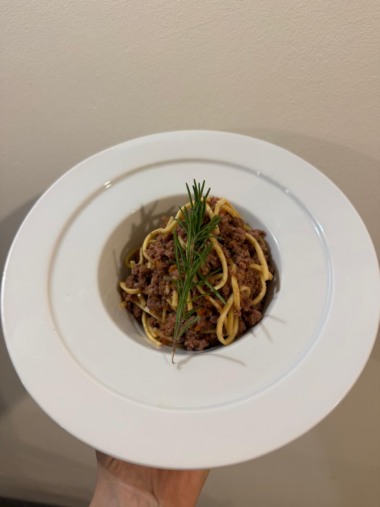

Tradizione piemontese, fatta in casa.
La gastronomia e il bistrot di Ai Savoia, la famiglia che dal 2006 accoglie ospiti nel Quadrilatero Romano. A pranzo, a cena o da asporto: ricette piemontesi e classici italiani, con prodotti freschi e di stagione.
«Nelle dimore storiche la cucina era il luogo dove la casa prendeva vita.»
La Real Cucina nasce da qui.

Tutto comincia alla fine degli anni Novanta, durante un viaggio in Scozia. È lì che il fondatore di Ai Savoia scopre i Bed & Breakfast, allora quasi sconosciuti in Italia: non soltanto una stanza in cui dormire, ma un modo di accogliere le persone come parte della casa.
Il primo nucleo apre nel 2006, mentre Torino si prepara alle Olimpiadi invernali, grazie a un programma della Regione Piemonte per lo sviluppo dell’ospitalità turistica. La sede è un palazzo storico di Via del Carmine affacciato su Piazza Savoia, con camere arredate con mobili d’epoca: ognuna porta il nome di un re o di una regina di Casa Savoia.
Negli anni sono arrivate le Camere delle Regine, la Locanda dei Re, la Foresteria dei Savoia e la Caffetteria e Sala da Tè. La Real Cucina è il quinto capitolo, e forse il più naturale: la stessa ospitalità di famiglia, portata in tavola.
La cucina è a gestione familiare. Lavoriamo prodotti freschi, selezionati e di stagione, e cuciniamo le ricette della tradizione piemontese e i grandi classici italiani, con un tocco di creatività. Ci si può sedere a pranzo o a cena, oppure passare in gastronomia e portare a casa i piatti del giorno.
- PranzoDal lunedì al venerdì, 11:00 – 15:00
- CenaDal mercoledì al sabato, 19:15 – 22:00
- AsportoI piatti della gastronomia, da portare a casa
- OspitiPer chi soggiorna da Ai Savoia, un voucher dedicato



Alcuni piatti
Piatti che sono passati dalla nostra carta. La disponibilità cambia di giorno in giorno.
Per secoli Torino è stata la capitale di Casa Savoia, e le sue tracce sono ovunque: Palazzo Reale, Piazza Castello, la Consolata, Via Garibaldi.
Il nostro nome viene da qui.
Il palazzo
Ai Savoia ha sede in un palazzo storico di Via del Carmine, con la facciata su Piazza Savoia, nello stesso complesso architettonico di Palazzo Saluzzo Paesana, costruito nel 1715.
Al civico 1F c’è la Sala dei Marmi, che ospita la Caffetteria e Sala da Tè: un’atmosfera di fine Settecento, con il camino e un dipinto di Vittorio Amedeo II. Qui si servono tè e infusioni sfusi, torte e il Messer Cremotto, un espresso con crema di latte avvolto da crema al pistacchio, al cioccolato o alla nocciola e completato dalla granella. La sala si può riservare anche per eventi privati.
La piazza dell’obelisco
Piazza Savoia, per i torinesi «la piazza dell’obelisco». L’obelisco celebra le leggi Siccardi del 1850, che abolirono il foro ecclesiastico. Alla posa della prima pietra, sotto il monumento furono murati:
- Due copie della Gazzetta del Popolo
- Una copia della legge
- Alcune monete
- Semi di riso
- Grissini
- Una bottiglia di Barbera
Ai Savoia: cinque case, una famiglia
Camere delle Regine
Ospitalità
La Locanda dei Re
Ospitalità
Foresteria dei Savoia
Via della Consolata 4, primo piano, angolo Via Garibaldi
Caffetteria e Sala da Tè
Sala dei Marmi, Via del Carmine 1F
La Real Cucina
Gastronomia • Bistrot, Via della Consolata 7D
Prenota un tavolo.
Pranzo dal lunedì al venerdì, dalle 11:00 alle 15:00. Cena dal mercoledì al sabato, dalle 19:15 alle 22:00.
- Gruppi
- Per tavolate e occasioni particolari chiamateci in anticipo: organizziamo insieme la sala.
- Allergie
- Segnalateci allergie o intolleranze al momento della prenotazione.
- Ospiti Ai Savoia
- Chiedete alla reception di Via del Carmine 1F il voucher dedicato a La Real Cucina.
- Asporto
- I piatti della gastronomia si possono portare a casa: chiamateci per sapere cosa c’è oggi.
La prenotazione online è in arrivo. Nel frattempo scriveteci su WhatsApp o chiamateci: rispondiamo appena possibile.
Orari
Orari di oggi
| Lunedì | 11:00 – 15:00 |
|---|---|
| Martedì | 11:00 – 15:00 |
| Mercoledì | 11:00 – 15:00 19:15 – 22:00 |
| Giovedì | 11:00 – 15:00 19:15 – 22:00 |
| Venerdì | 11:00 – 15:00 19:15 – 22:00 |
| Sabato | 19:15 – 22:00 |
| Domenica | Chiuso |
Il lunedì e il martedì siamo aperti solo a pranzo, il sabato solo a cena. La domenica la cucina riposa.
Dove siamo
Siamo in Via della Consolata 7D, nel cuore del Quadrilatero Romano, a pochi passi dalla Caffetteria Ai Savoia. Via della Consolata incrocia Via Garibaldi, la lunga via pedonale tra Piazza Castello e Piazza Statuto: da Piazza Castello si arriva a piedi, percorrendo Via Garibaldi.
Via della Consolata 7D
10122 Torino
Reception e Caffetteria
Via del Carmine 1F
- Piazza Savoia e l’obelisco
- Via Garibaldi, pedonale
- Santuario della Consolata
- Porta Palazzo
- Piazza Castello e Palazzo Reale